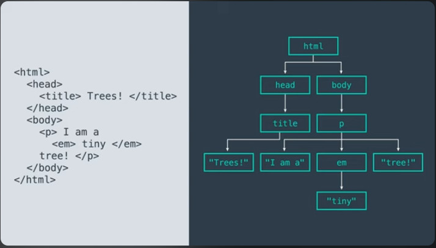
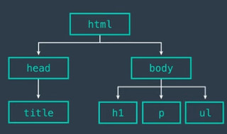

Daraxt strukturalari - bu sizning kodingizda juda ko'p ishlarni namoyish qiladigan narsa. Ular haqiqatan ham kompyuter ilmida va dasturchilar tomonidan kompyuter tillari qanday ishlashi haqida gaplashishida keng tarqalgan. Shunday qilib, daraxt tuzilmalari terminologiyasi haqida ozgina ma'lumot olish foydalidir. Daraxt tugunlar yoki daraxtning elementlari deb ataladigan qismlardan iborat bo'lib, ular orasidagi bog'lanishlari shoxlar deb ataladi. Siz ko'rgan HTML elementlari bunga misol edi, ammo mana bu yerda boshqa misol Bu mening uyimdagi ba'zi narsalarni ro'yxatga olish uchun yaratgan daraxt. Tugunlar qutichalarda joylashgan so'zlardir Shoxlar esa ko'rsatilgan o'qlardir Bu mening uyimda oshxona, hammom va yotoqxona borligini va bu xonalarning har birida bir nechta mebel jihozlari borligini bildiradi. Oshxonadagi muzlatgich va yotoqxonadagi to'shaklar kabi, sovutgichda bodring va ozgina yogurt va karovatda yostiqlar mavjud. Daraxtning tugunlari o'zaro bog'liqdir. Bu yerda men o'qlar orqali ularni chizaman va bu ular mana buning ichida ekanligini anglatadi. Xuddi mening kvartiramdagi yostiqlar yotoqxonadagi krovatda bo'lgani kabi. Daraxtning har doim ildizi bor,

U daraxtning cho'qqisi yoki boshlanishidir. Agar HTML hujjat bo'lsa, hmtl elementi daraxtning ildizidir. Har qanday aniq tugundan chiqqan tugunlar uning farzandlari deb ataladi. Shunday qilib, html elementi farzandlari kabi bosh va tanaga ega. Bosh tugun bola kabi sarlavhaga ega va tana qismida p elementi va boshqalar mavjud. Bundan tashqari bu elementni aylantirib, ushbu p elementning tanasi bo'lgan ota tugunlari bor deb aytishimiz mumkin va bu agar bizning ushbu hujjatda bir nechta paragraflar bo'lganda shunday bo'ladi. Ularning har biri alohida p tugunidir va ularning barchasi o'z otalari sifatida tanaga ega. Ammo daraxt bu qutichasi va o'qlari bo'lgan diagramma kabi emasdir. Uni tepada ildiz bilan yozish shart emas. Uni umuman yozish shart emas. Daraxt bu ma'lumotlarning tuzilmasidir. U axborotni tashkil qilish usulidir. Qanday qilib biz ma'lumotlar tuzilishini yozishimiz yoki chizishimiz ikkinchi darajali ishdir. Siz qachondir umumiy ko'rinishni hosil qilganda, masalan maktabdagi biror-bir qog'ozli ish uchun yoki slaydlar ichidagi o'q nuqtalardan foydalangan holda taqdimot qilgansiz yoki ma'lumotlarni izohlashda ichma-ich toifalanishini ajratganingizda siz o'zingiz bilmagan holda daraxt tuzilishini ishlatgansiz. Albatta har safar HTML yozganingizda daraxt tuzilishini ham yozasiz. Shunday qilib daraxt tuzilmalari uchun doimo to'g'ri bo'lgan bir nechta qoidalar mavjud. Birinchi, ildiz bo'lgan bitta tugundan daraxt tuzilishi. Ikkinchi, har bir tugun ildizni o'z ichiga olgan holda, boshqa tugunlarni ko'rsatadigan ma'lumotnomalar yoki shoxlarga ega bo'lishi mumkin.

Mana bu boshqa tugunlar bu tugunning farzandlaridir. Uchinchidan har bir tugunda bitta-bitta ota-ona mavjud, bundan tashqari, ota-onasi bo'lmagan ildiz tugunidan tashqari. Har bir tugunning har qanday sonli shoxlari bo'lishi mumkin bo'lsa ham, unga faqat bitta shox kira oladi. Yangi shox hech qachon daraxtda joylashgan tugunni ko'rsata olmaydi. Buni ko'rsatishni yana bir usuli shundaki, ildizdan tashqari har bir tugun bitta otaga ega va bu daraxtlar uchun barcha qoidalarga tegishlidir. Hisoblashni davom ettirar ekansiz, hamma joyda daraxt strukturalari borligini ko'rasiz. DOM yoki hujjat obyekti modeli, HTML ga mos keladigan daraxt tuzilishi shulardan biridir. Bu aslida dasturchilar vositalaridagi elementlar bo'limini ko'rib chiqayotganingizdagi narsaning o'zidir. Haqiqiy HTML manba kodi emas, balki DOM daraxtidan qayta tiklangan versiyasi. Shuning uchun ham u asl nusxadan farq qiladi.